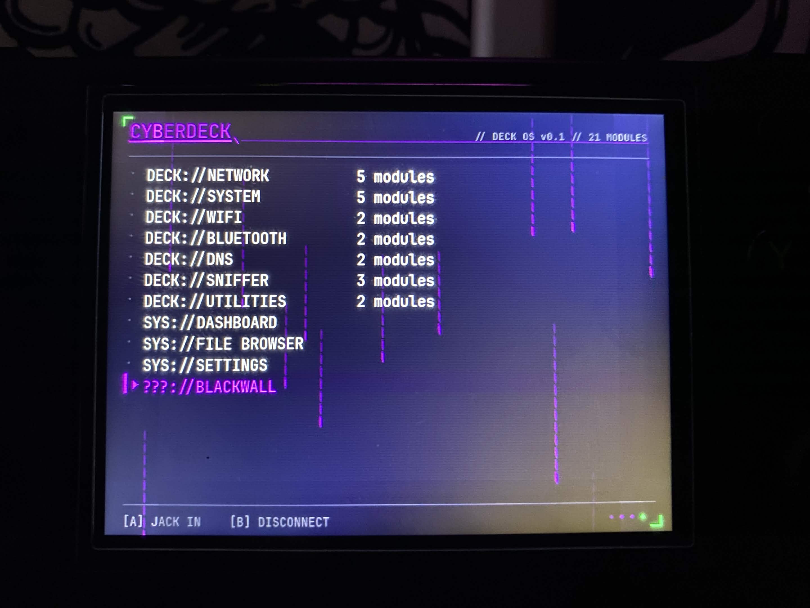
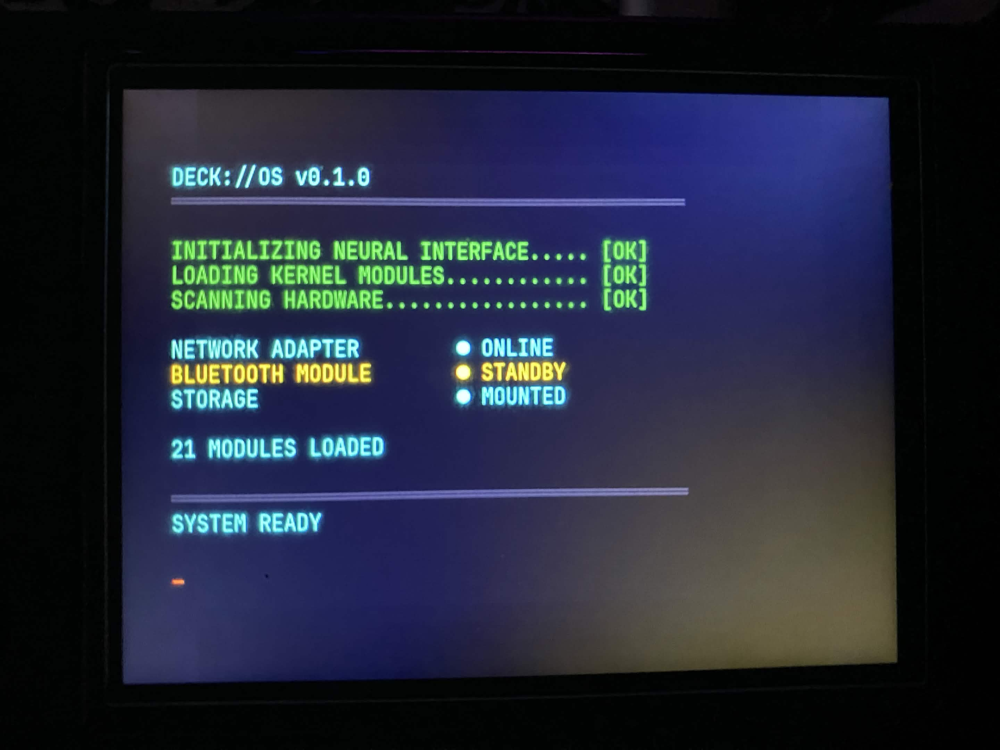
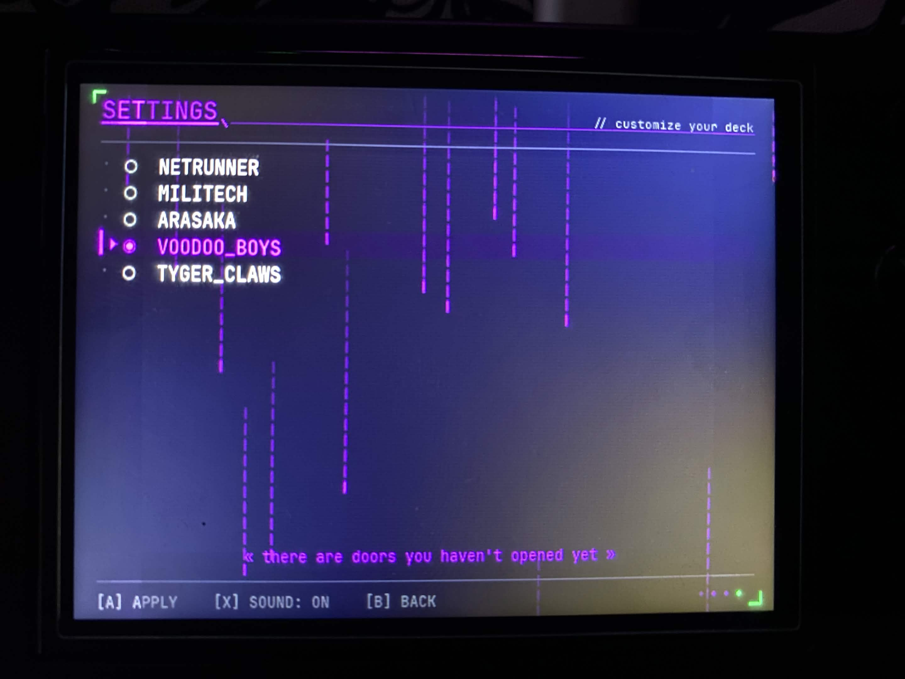
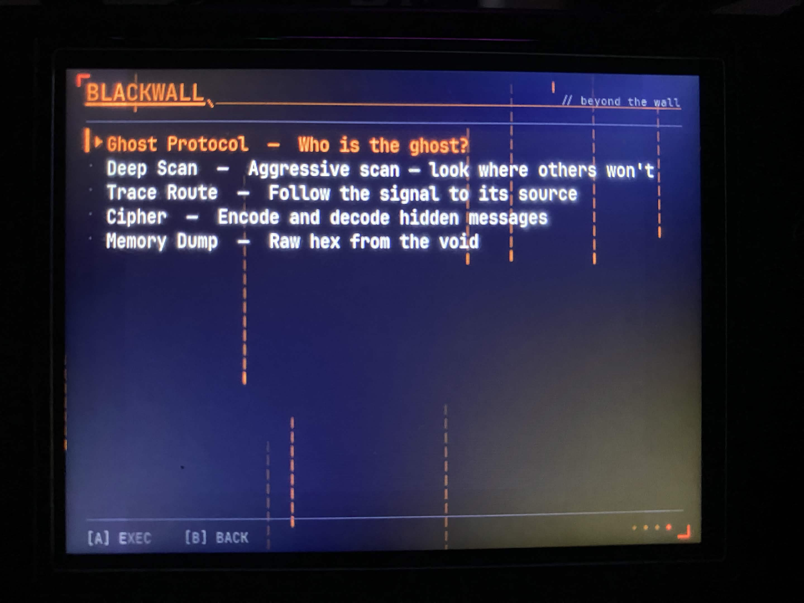

Cyberpunk 2077-inspired cyberdeck interface for the Anbernic RG35XX-H handheld. 26 tool modules, ghost AI, discovery system, and procedural audio — all at 640x480 for gamepad-only input.
A standalone application that turns the Anbernic RG35XX-H handheld gaming device into a futuristic hacking terminal. Designed for the muOS firmware, the cyberdeck features 21 surface modules across network, system, WiFi, Bluetooth, DNS, and sniffer categories — plus 5 hidden Blackwall tools unlocked via the Konami code.
Every element is built for gamepad-only interaction on a 640x480 screen: d-pad navigation, ABXY for confirm/back/alt actions, L1/R1 for page scrolling, and Start/Select for menu and info.
The experience is layered with narrative — a ghost AI personality whispers context-aware cryptic messages, a discovery system tracks your exploration progress, and the Blackwall reveal features a cinematic scan-line animation. The boot sequence has a 40% chance of showing ghost hints.
Sound effects are procedurally generated at runtime using sine and square wave synthesis — no external audio files. Five hotswappable color themes (Netrunner, Militech, Arasaka, Voodoo Boys, Tyger Claws) change the entire visual palette.

Main Menu — 21 Modules / 7 Categories
Boot Sequence — DECK://OS v0.1.0
Settings — Theme Selection & Ghost AI
Blackwall — Hidden Tools Beyond the WallNetwork scanning, port probing, ARP tables, WiFi/Bluetooth discovery, DNS lookup, traffic stats, Wake-on-LAN, and more — organized across 7 categories.
5 hidden tools unlocked via Konami code: Ghost Protocol, Deep Scan, Trace Route, Cipher, and Memory Dump. Complete with a cinematic reveal sequence.
Context-aware AI personality that whispers cryptic messages. Adapts to your current state — network scanning, idle, or deep in the Blackwall.
Matrix-style digital rain particles, CRT scanlines, vignette, dot grid, and stochastic glitch effects (1-2% chance per frame).
8 synthesized sound effects generated at runtime using sine/square waves. Navigate, confirm, boot, execute, discovery, and ghost sounds — zero external files.
BOOT → MAIN_MENU → TOOL_MENU → RUNNING → OUTPUT with ambient mode, file browser, dashboard, settings, and discovery states.
The application is a state machine driven by pygame's event loop. Input is mapped from SDL2 gamepad/joystick events to abstract actions, with keyboard fallback for PC development. The renderer handles all cyberpunk visual effects — scanlines, vignette, dot grid, neon typography, and glitch distortion.
Tools follow an abstract base class pattern with name, description, and async run() methods. The build pipeline creates .muxapp archives containing source, pygame aarch64 wheels, and fonts — with a launcher script that swaps bundled SDL2 for system mali GPU libraries on the target device.